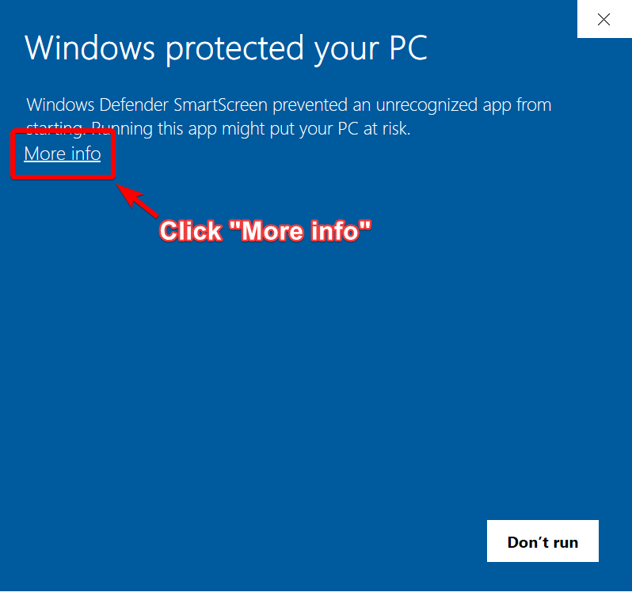
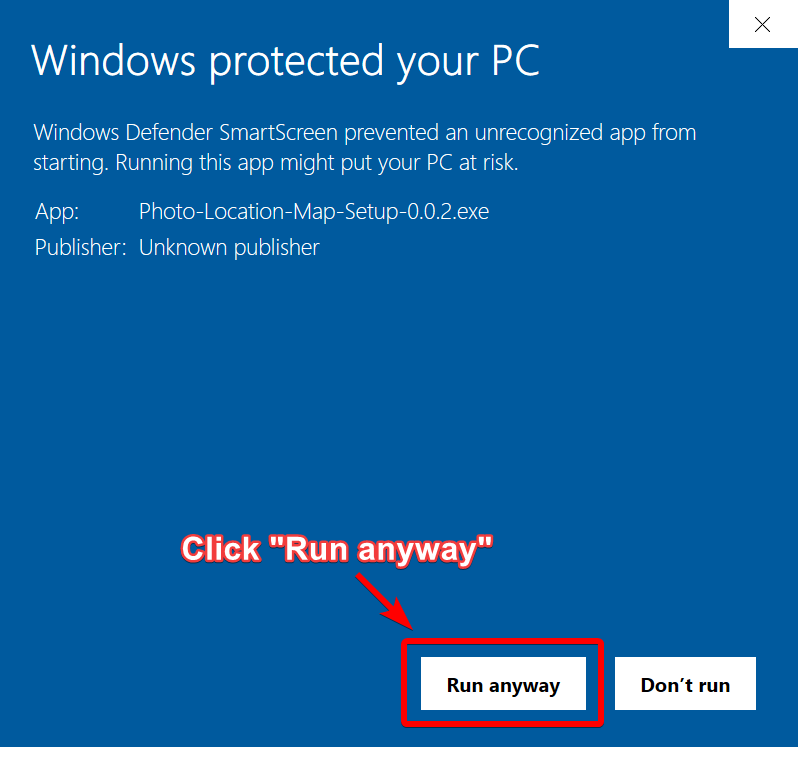

Download of Photo Location Map will start shortly. If it does not start, please click
here
.
How to install
1. Double click the downloaded exe file.
2. Windows Defender SmartScreen popup will appear. Click "More info".

3. Click "Run anyway".

4. Installer will launch. Follow the instructions on the installer.